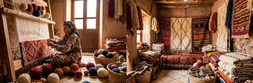
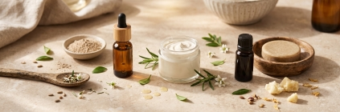
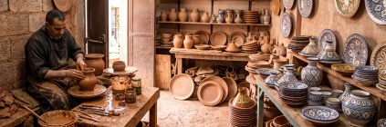
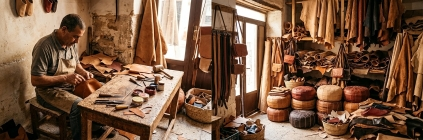
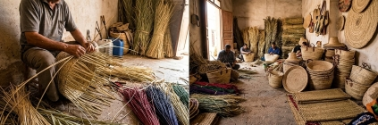

Tissage & Tapis Amazighs
Tissage des tapis amazighs, métier à tisser en bois ancestral, laine
vierge naturelle teinte aux racines de garance et peaux de grenade.
Une tradition sacrée des reliefs du Haouz et du Moyen Atlas.

Huile d'Argan & Cosmétique
Savoir-faire ancestral féminin du Souss-Massa,
pressage artisanal à froid, extraction éthique et
valorisation de l'arganeraie classée par l'UNESCO.

Poterie & Céramique
Argile rouge de Safi et poterie chamottée modelée au
doigt dans le Rif septentrional, cuite au feu de bois
selon des rituels millénaires.

Zellige & Géométrie d'Art
Art géométrique raffiné, taille manuelle au marteau
(menqash) de carreaux émaillés, maîtres-artisans
Maâlems de Fès et Meknès.

Travail du Cuir
Maroquinerie de tradition, tannage 100% végétal aux
fosses de Chouara, cousu main selon les gabarits
historiques des corporations impériales.

Vannerie & Sparterie
Tressage de doum des palmeraies, osier frais et rotin
tressé. Nattes, paniers et pièces d'architecture
organique façonnées au rythme des saisons.